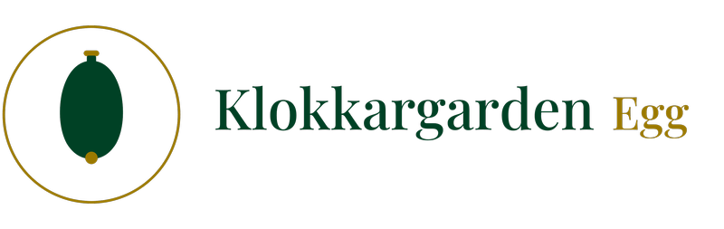

I Klokkargarden har vi ein lidenskap for ferske og kortreiste matvarer. Egga våre er produserte lokalt, med eit eigenutvikla spesialfôr — paprika og tagetes gir plomma den karakteristiske fargen, og tilsett jod gjer egga rike på jod. Det er dette som gir den reine, gode smaken egga våre har blitt så kjende for.
Dei 15 167 hønene våre går fritt, både høgt og lågt. Dei kan «bade» i strøet, vagle seg i høgda eller trekkje seg tilbake i eit av reira — heilt som dei vil. Trivsel gir gode egg.
Frå bakverk til frukostbord: egg frå Klokkargarden passar like godt uansett kva du lagar.


Møkje gode ferske egg rett frå hønå.
Kunde, via FacebookDei beste egga får vi hjå dokke.
Kunde, via FacebookVeldig gode egg. Litt lang veg å køyre frå Fosnavågen, men er innom av og til.
Kunde frå Fosnavåg, via FacebookSupre flotte egg, finst ikkje maken — og så nær produsert!
Kunde, via FacebookSuper kvalitet. Fantastisk til å bake med, og kjempegode til å spise.
Kunde, via FacebookTakk for verdens beste egg.
Kunde, via Facebook
Etter meir enn 100 år med samanhengande eggproduksjon på garden kan vi med handa på hjartet seie éin ting — gulare blir dei ikkje.